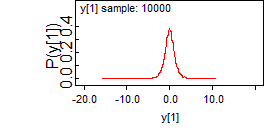
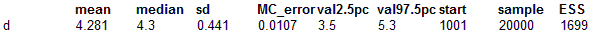
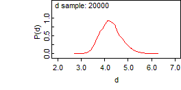
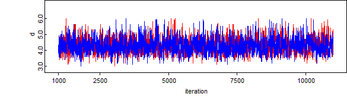

Simulating data: learning about the degrees of freedom of a t-distribution
This example uses simulated data: we generate n = 1000 observations from a (standard) t distribution with
d = 4 degrees of freedom:
model {
d <- 4
for (i in 1 : 1000) {
y[i] ~ dt(0, 1, d)
}
}
We let the sampler run for a while (just to check that we're simulating from the correct distribution) and then we save a set of simulated data using the 'save state' facility (select
State from the
Info menu).
Check: should have mean 0, variance 2, etc.
mean sd MC_error val2.5pc median val97.5pc start sample
y[1] 0.01129 1.383 0.01415 -2.645 -0.01056 2.843 1001 10000
To analyse the simulated data: first we try a model for learning about the degrees of freedom as a continuous quantity:
Modelmodel {
for (i in 1:1000) {
y[i] ~ dt(0, 1, d)
}
d ~ dunif(2, 100) # degrees of freedom must be at least two
}
# test truncationmodel {
for (i in 1:1000) {
y[i] ~ dt(0, 1, d)T(-50, 50)
}
d ~ dunif(2, 100) # degrees of freedom must be at least two
}
Data
list(
y = c(
0.6198,0.909,1.214,-0.2378,2.471,
0.8881,4.526,-3.048,-0.4039,0.1464,
0.8168,0.3377,1.244,-0.5036,-3.275,
0.2038,0.2198,0.02984,-1.591,1.219,
0.456,0.8206,-0.8904,0.5116,1.709,
-0.1632,-0.1556,-0.9488,0.2658,-0.2757,
-0.7156,0.3891,-0.3972,1.126,-0.04562,
-1.023,-0.2997,-1.529,-1.304,-0.3963,
-1.342,0.2707,-0.7539,1.075,-1.236,
0.2686,-0.7793,0.247,-0.1234,1.096,
0.3949,0.2669,-0.3347,0.9494,1.075,
4.86,0.5967,0.5605,-1.331,-0.2925,
0.404,-0.09936,-1.799,-0.3873,1.323,
0.2479,0.2486,-1.114,-0.3774,-0.3704,
1.497,1.736,-1.657,-0.02219,-0.8786,
1.362,1.282,0.709,-1.443,0.5774,
-0.2957,0.9289,5.142,0.9784,-1.774,
1.034,0.3699,-1.665,-0.199,1.119,
-1.474,-0.2979,1.268,-2.396,-1.626,
2.185,0.1846,0.7285,-1.627,-2.699,
0.5002,0.2033,0.7209,-0.4287,-0.2053,
-0.4245,-0.6676,1.381,-1.259,0.5434,
-1.013,0.5165,0.2755,0.9312,-0.7799,
2.601,2.51,-0.3427,1.048,0.4806,
-3.194,-0.6113,-1.234,0.6285,0.02296,
0.4129,0.1305,-0.9421,-1.277,-0.31,
-0.5866,0.2431,-0.3949,-0.3085,0.4198,
-0.4961,1.56,-1.717,1.174,0.5513,
-1.935,-0.53,0.4877,4.123,0.5736,
-0.4188,1.974,0.4796,-0.02396,-0.4099,
-0.8035,2.342,-0.4853,0.06999,-1.69,
-0.09839,-0.9301,0.5728,0.6714,0.08796,
1.027,-1.514,-2.162,0.9653,-0.7775,
-2.918,-0.05894,-0.6072,-0.1057,0.7424,
1.548,-0.322,-0.3477,0.2643,-2.649,
-0.3664,1.787,1.061,0.4034,-1.762,
0.5704,-0.4713,-3.116,0.4769,-0.4389,
-0.4792,-0.02995,0.2783,-1.824,-0.2149,
1.115,0.8911,0.8582,-1.471,-2.012,
-0.51,1.261,-0.444,-1.43,-0.8976,
0.104,-0.9921,0.3982,-0.08175,-1.527,
1.307,-0.4128,-0.3672,0.1966,1.514,
-0.7517,0.1595,0.7566,-0.4334,-2.858,
-1.047,0.5018,0.2063,0.3994,0.2013,
2.513,1.264,0.3779,0.7478,-0.5138,
-2.259,-1.057,-0.7541,1.741,0.5953,
0.5442,-0.07557,0.2335,-1.898,-0.96,
-0.2571,-0.6364,1.321,3.508,-0.2885,
-1.219,0.04227,-0.2835,-1.367,0.2218,
1.06,1.861,1.274,1.805,-0.6717,
-0.02383,-0.046,0.1204,-0.6754,-0.8821,
-0.1458,2.203,-2.309,1.4,-0.7178,
-1.729,1.806,1.193,1.06,13.74,
1.82,1.293,-1.14,0.07137,-1.708,
-0.2843,-0.9779,-1.995,-0.6761,-0.3462,
3.408,2.183,1.216,0.3641,0.2279,
0.1963,-0.08194,1.76,-2.246,0.6619,
0.6437,-0.2131,2.9,-0.5746,0.5976,
0.4559,-1.338,-1.241,-1.49,0.4338,
-0.2957,0.6259,-1.143,-1.215,2.298,
0.1211,-0.5949,2.486,-0.9737,1.486,
-0.9276,-0.4126,0.04641,-0.0508,0.3471,
-2.779,-0.6051,-1.355,0.3274,4.324,
0.7233,-0.4771,0.9736,-0.119,0.7413,
0.6895,0.2738,-0.1,-1.177,-0.03247,
2.061,-1.013,-0.3638,-0.9285,-0.07621,
0.2043,0.9231,0.9859,1.078,0.424,
1.751,-0.722,1.033,-2.356,-0.1254,
-0.03213,1.235,-0.2598,-1.397,-0.1996,
-0.1534,-2.536,-1.056,0.6024,-0.4142,
-1.071,0.1275,-0.4772,0.2859,-0.2028,
0.4347,-0.01844,-0.7376,0.6514,-0.3934,
0.5967,0.7621,-1.446,0.1867,0.4697,
0.3242,0.2084,-0.1145,-1.585,0.7853,
0.07983,0.6593,-0.5452,0.6956,0.6127,
-0.03222,-0.6591,-1.169,-0.5141,1.918,
0.8488,-0.115,-3.79,-2.707,-2.238,
0.1334,1.272,-0.1043,0.3152,-1.447,
1.044,0.7642,1.37,0.3495,-0.005776,
0.2286,0.8526,0.5375,1.518,-2.11,
-0.6711,0.08288,0.1224,-0.14,-0.1895,
-0.8932,0.5368,1.344,-1.106,-1.451,
-1.574,-1.031,1.742,-0.004173,-1.26,
-0.2786,-0.6378,-1.236,0.5155,3.432,
-0.7629,-0.1553,0.4199,-0.8565,1.043,
1.369,-0.7946,-0.7399,0.6226,-1.382,
1.283,-0.4857,3.647,0.8138,0.4301,
0.9462,-0.9338,-1.097,1.892,0.4705,
0.0971,-1.869,1.119,-0.009169,1.202,
1.206,-1.266,-2.283,-1.492,0.114,
-2.809,-0.398,0.04773,0.5787,-1.114,
-0.3328,1.264,1.113,1.429,1.184,
5.336,-1.458,2.05,-0.6587,-0.3142,
2.977,-0.6782,-0.8875,0.2907,-3.155,
-0.5647,-1.475,0.3186,1.504,-0.2937,
-0.002229,-0.6425,0.9035,1.802,0.3207,
-0.602,-0.08825,-0.6279,2.713,0.7419,
-0.7486,0.4558,1.087,-0.4052,-2.928,
0.1802,2.296,3.461,-0.335,-3.163,
-1.477,3.859,0.6512,0.5932,0.5492,
0.2799,-1.738,-0.398,0.9726,0.6201,
-1.58,1.103,0.8011,-0.9104,-0.9312,
4.349,-0.7423,2.905,0.5398,-0.8922,
-0.8405,-0.1549,-1.098,0.1096,-1.473,
0.7574,1.917,1.105,-0.2781,0.8204,
-0.9104,-1.14,0.5023,0.7312,-0.01819,
-1.685,-0.7021,0.3828,-1.792,0.1807,
-1.145,-0.9592,0.217,-1.608,0.3985,
0.465,1.985,1.105,1.096,0.3236,
0.5183,2.599,1.12,0.09743,-1.379,
1.044,-0.3132,-0.4558,-1.39,-1.189,
-0.1277,-1.967,1.688,0.7145,0.3674,
-3.05,0.4331,0.09203,-1.605,-1.177,
3.124,0.006735,0.3112,-0.2487,0.2359,
-0.3324,-0.2352,-1.687,-0.0573,1.308,
2.114,-1.33,-1.672,-0.4852,2.314,
0.3651,0.08936,-0.6292,0.8401,-1.196,
0.3329,2.581,-0.905,-4.103,0.2871,
1.323,0.4252,-2.412,-2.293,-1.434,
-0.4508,-0.3303,-0.3773,1.004,2.687,
0.4024,-0.2827,-0.2831,-0.774,-0.5625,
2.459,-1.557,0.5903,-0.4898,-1.113,
1.159,-0.452,-2.544,-0.0476,-0.09404,
0.02479,0.5894,0.2358,-3.289,-0.204,
-0.2882,0.09087,-0.9253,-0.2914,-0.2262,
0.4954,-0.07101,1.743,1.515,-0.4774,
-1.399,-0.8999,0.2464,1.657,1.195,
2.189,-0.05521,1.012,-1.15,0.4874,
-0.1121,-0.981,1.368,0.4593,-0.7105,
-0.03605,-2.083,2.667,2.778,1.979,
-0.9633,2.197,1.972,1.072,-2.537,
0.2829,-0.5107,-0.5257,-0.3103,-1.541,
-2.0,0.2127,-0.6663,0.1287,-0.7746,
0.2684,-0.6101,0.2137,0.5056,0.208,
0.6623,-1.323,-0.06565,-1.138,1.56,
-0.4305,0.9166,-0.2531,-0.9836,0.5407,
0.7087,0.08349,-0.6458,-1.383,0.8904,
-0.8632,-1.077,0.08641,0.5673,-0.2276,
-0.1643,1.225,-0.1776,1.559,-0.2019,
5.001,-0.4665,-0.8086,0.05661,0.6952,
0.8757,-0.1984,2.741,-0.5648,-1.045,
0.03317,0.3164,0.6621,1.096,-0.7304,
9.592,-0.3042,2.13,-0.2542,0.1846,
0.966,2.184,0.6442,0.8096,-1.244,
-1.867,-1.391,-0.5788,-0.8452,-0.6817,
0.969,-3.152,-1.451,-1.792,0.2462,
0.3696,0.1332,-1.815,-0.2473,0.1601,
-0.3414,-0.07091,0.9406,-0.1207,-1.222,
1.308,-1.239,0.06946,-1.873,0.8193,
-0.4626,-0.6027,0.9697,1.732,0.1355,
-0.8178,1.126,0.01261,-0.576,-0.04919,
-0.2293,-0.8498,0.2306,0.4471,-2.901,
0.222,-0.8563,0.3353,-0.2554,-0.6409,
-2.078,-1.3,-0.7347,0.4023,1.158,
-0.03958,-0.9611,0.1362,0.5934,0.1116,
0.5197,-1.484,-2.184,-0.5289,0.6499,
0.3126,0.5405,0.9051,-0.5848,-2.369,
-1.133,-0.5635,-1.145,0.4283,2.112,
0.3895,-1.966,-4.106,-0.7782,-3.703,
-0.314,1.195,-1.517,-0.6052,0.7718,
0.9917,-0.007662,0.8163,-0.6696,0.9018,
0.4175,0.6714,0.2997,-0.7887,1.455,
0.9927,-1.026,-0.2022,-0.7414,0.6802,
-0.7849,-2.487,0.01056,0.1406,0.4064,
-0.2418,-0.3843,0.8607,-0.9724,-0.4854,
0.1953,-1.197,1.375,0.8545,-1.236,
-1.715,0.4317,-0.9725,0.2158,-0.1918,
-1.384,0.4214,1.195,0.08368,-0.01207,
-0.3787,-0.307,-0.9602,0.2647,2.546,
-1.754,-0.5275,-1.281,0.03034,0.6211,
1.363,-1.939,0.6584,-0.6594,-3.844,
1.568,0.4874,-0.2298,-0.5797,2.377,
-1.411,0.8634,2.273,0.5524,1.216,
-0.1868,0.6413,-0.6572,0.6165,4.663,
0.6168,-0.6186,-0.1682,-0.3721,-2.477,
1.929,0.483,0.4272,2.676,0.4746,
1.881,0.2172,0.05682,-0.2933,-3.028,
0.2186,-0.2648,-0.4814,-0.9612,0.7299,
-0.4495,3.332,-0.5156,0.7209,-1.148,
0.00685,0.5295,0.5043,0.4221,-0.5792,
-0.9661,0.9078,-0.04725,-0.01306,-1.372,
0.5192,-0.1299,-0.09744,0.07778,-0.9836,
0.08239,1.167,5.394,0.124,-1.375,
-0.9919,0.9104,-0.4351,-0.4852,-0.8416,
0.5526,-0.07366,1.584,0.2187,-0.05471,
-1.837,1.026,0.7651,-1.033,-0.7327,
0.2081,-1.393,0.7295,0.6186,-0.5284,
-0.3819,0.1643,-1.143,0.2992,1.989,
0.5289,0.1371,-0.9986,-0.6569,0.7123,
-0.1237,-0.7847,-2.359,-4.823,1.121,
1.46,1.494,0.824,0.8609,1.274,
0.1735,-1.648,-0.4387,-0.4195,1.431,
0.6176,-0.8923,0.152,0.7802,0.4293,
-0.08863,0.832,3.804,1.415,0.1621,
1.096,1.155,-0.09557,-0.2626,-2.504,
1.923,-0.2224,-0.5606,0.7413,1.333,
0.645,-1.786,-3.725,0.2484,0.03303,
0.07024,1.643,-0.6286,-2.08,-0.8305,
-0.3658,-0.7608,0.4096,0.2596,-1.606,
-0.6982,-0.9886,-0.6044,-0.2574,-1.25))
Now we attempt to model the degrees of freedom parameter with a discrete uniform prior on {2, 3, 4, ..., 50}. The sampler soon converges to
d = 4 but mixes poorly.
model {
for (j in 1:49) {
p[j] <- 1 / 49
d.value[j] <- j + 1
}
for (i in 1:1000) {
y[i] ~ dt(0, 1, d)
}
K ~ dcat(p[])
d <- d.value[K]
}
We should get better mixing if we specify the prior for
d on a finer grid, e.g. {2.0, 2.1, 2.2, ..., 6.0}:
Model
model {
for (j in 1:41) {
p[j] <- 1 / 41
d.value[j] <- 2 + (j - 1) * 0.1
}
for (i in 1:1000) {
y[i] ~ dt(0, 1, d)
}
K ~ dcat(p[])
d <- d.value[K]
}


